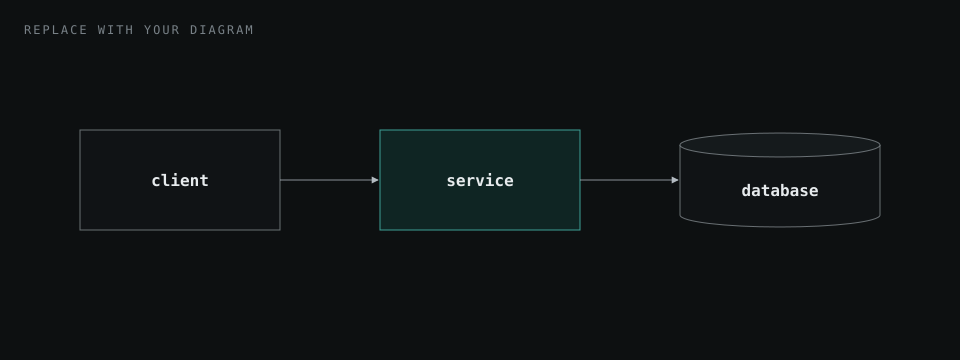
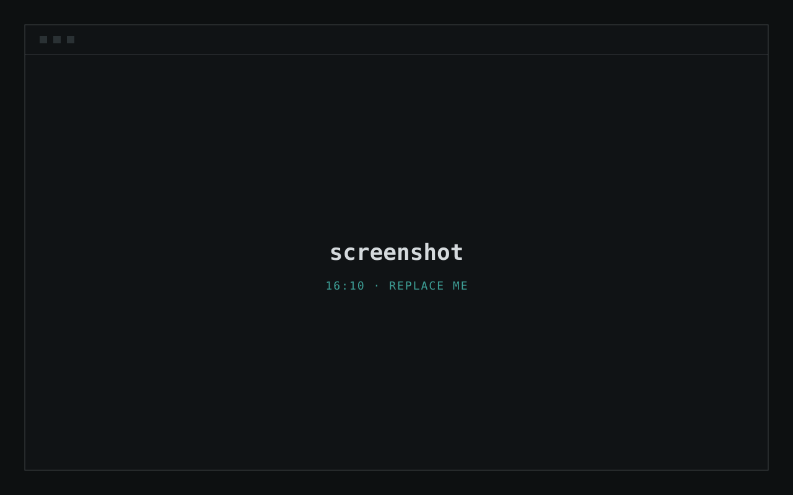

Overview
What the project is and why it exists. Keep it to a short paragraph or two.
- 00what this number measures
- 00%what this number measures
- 0xwhat this number measures
The problem
Who had the problem, what it cost them, and why existing solutions were not good enough.
- A constraint or requirement.
- Another constraint or requirement.
Architecture
How the system is put together and why it is shaped that way.

Implementation
The interesting parts of the build. Use sub-headings to split it up.
- Step onewhat happens here
- Step twothe important step
- Step threewhat happens here
A sub-heading
Explain one component or decision. Inline code looks like this.
// Paste a short, meaningful excerpt.
function example(input) {
return input * 2;
}| column | column | column |
|---|---|---|
| value | value | value |
| value | value | value |
Results
What the project achieved. Numbers, feedback, screenshots of the finished product.

What I learned
- A lesson, and how it changed the way you work.
- Something you would do differently next time.